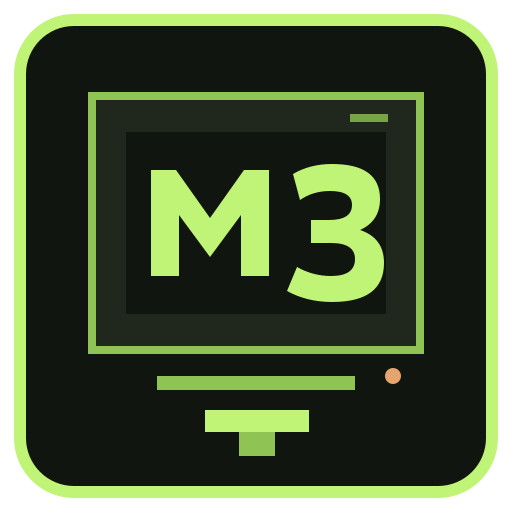

Aprenda por dentro
Inspecione registradores, flags, pilha e memória a cada instrução.

MINIX8PERSONAL COMPUTER SYSTEM REPORTAR BUG8-BIT COMPUTER · SOFTWARE EDITION 1987 · v1.0.0
Uma máquina virtual pequena, aberta e programável. CPU, 64 KiB de RAM, monitor e ROMs, reunidos em um pacote para seu computador atual.
EDIÇÃO DE FÃ · CPU 8-BIT EMULADA · VM LIVE DISPONÍVEL
01 / O SISTEMA
MiniX8 é um computador virtual didático: o núcleo executa código de 8 bits, o monitor permite explorar a máquina e as ROMs carregam seus programas. O mesmo binário funciona em Linux, macOS e Windows.
Inspecione registradores, flags, pilha e memória a cada instrução.
Use a ISA documentada para construir ROMs e experimentar o ciclo da CPU.
Implementado em C11. Compile com Make ou CMake, use no terminal ou em container.
02 / FOLHA DE ESPECIFICAÇÕES
CPU interpretada · registradores A, B, C, D
Espaço de endereçamento de 16 bits
Aritmética, lógica, saltos, pilha, console e leitura do contador
Linux x86-64 · macOS ARM64 · Windows x86-64
02 / DESKTOP CONTROL
MINIX8 MONITOR / ROM: HELLO.ROM
ROM CARREGADA: 10 BYTES EM 0000
A=21 B=00 C=00 D=00 PC=000A SP=FFFF
FLAGS=--- CICLOS=7 HALT
READY_
GUI desktop pronta: Tkinter controla o executável C, abre ROMs, monta fontes .asm, converte .hex, avança instruções, inspeciona CPU/RAM e envia entrada UTF-8 ao console virtual.
MANUAL DA INTERFACE03 / DISPOSITIVOS & PROGRAMAÇÃO
A GUI inclui um inventário somente leitura do hardware que Linux, macOS ou Windows publicam. Ele ajuda a inspecionar o computador hospedeiro; não adiciona esses dispositivos à máquina virtual.
Hoje o programa virtual usa console byte a byte por IN/OUT. A ISA inclui `GETCYC` e `GETCYH` para leitura determinística do contador de instruções, mas ainda não tem timer de tempo real, interrupções, NIC, armazenamento guest, USB passthrough, framebuffer ou áudio. O scanner pode listar classes como rede, disco, entrada, áudio, vídeo, serial, Bluetooth e USB/PCI quando o host oferece esses dados.
Escreva assembly MiniX8, monte uma ROM e abra-a na bancada gráfica. A entrada UTF-8 chega à CPU como bytes; o código deve ler cada byte com IN.
CPU/RAM virtuais, console IN/OUT, leitura determinística do contador, GUI de depuração e inventário de dispositivos do host em modo somente leitura.
Documentação externa sobre drivers separados, abstrações de dispositivos e protocolo de rede. É orientação de arquitetura, não compatibilidade binária.
Timer virtual, interface de console desacoplada, framebuffer, disco em arquivo e adaptador de rede mediado pelo host; nenhum deles é anunciado como implementado.
Referências técnicas MINIX 3 e livros de Andrew S. Tanenbaum →
03 / DEMONSTRAÇÃO
01 4F 19 01 69 19 01 21 19 1ACarrega O, imprime; carrega i, imprime; carrega !, imprime; para a CPU.
MINIX8 MONITOR v1.0
64K RAM DETECTED ... OK
TYPE help TO BEGIN.
DEMO VISUAL · EXECUTE O BINÁRIO PARA USAR O EMULADOR REAL
04 / DISTRIBUIÇÃO · v1.0.0
Baixe os binários da release, explore a ISO de dados ou inicie a mídia live em uma VM x86-64 com UEFI (BIOS legado nas releases CI).
05 / MANUAIS & OFICINA